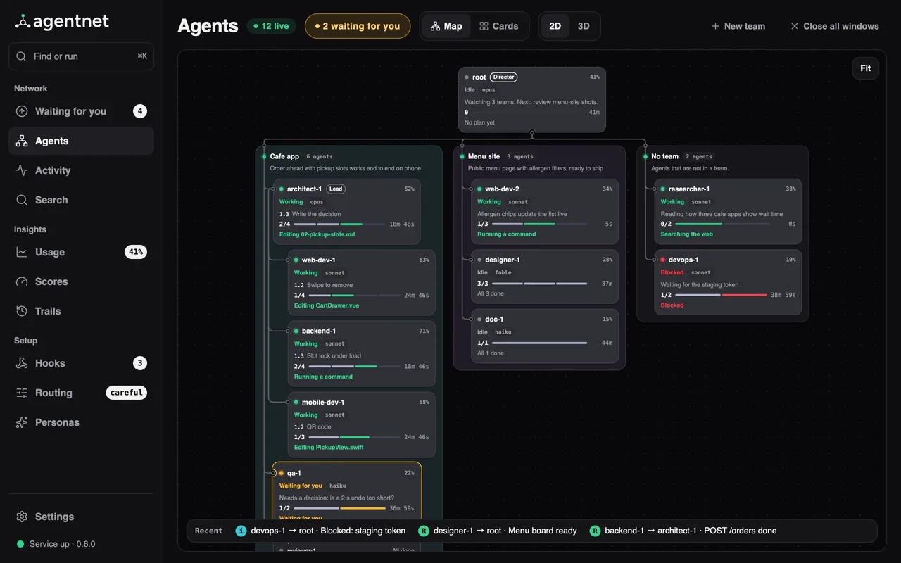
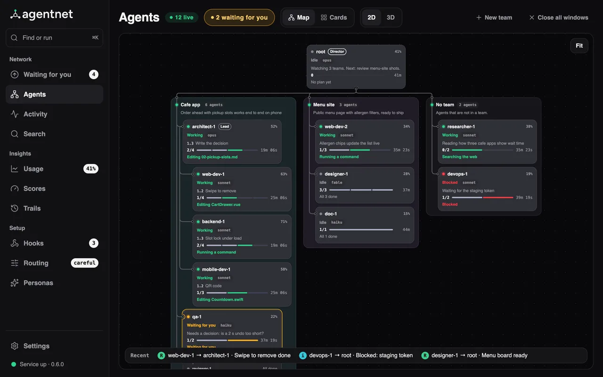
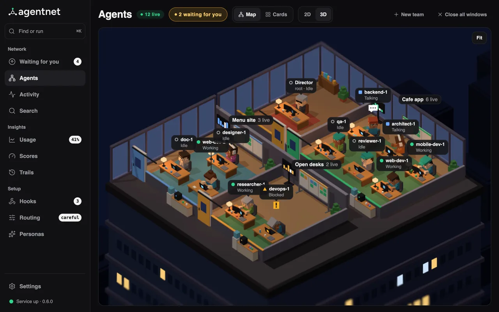
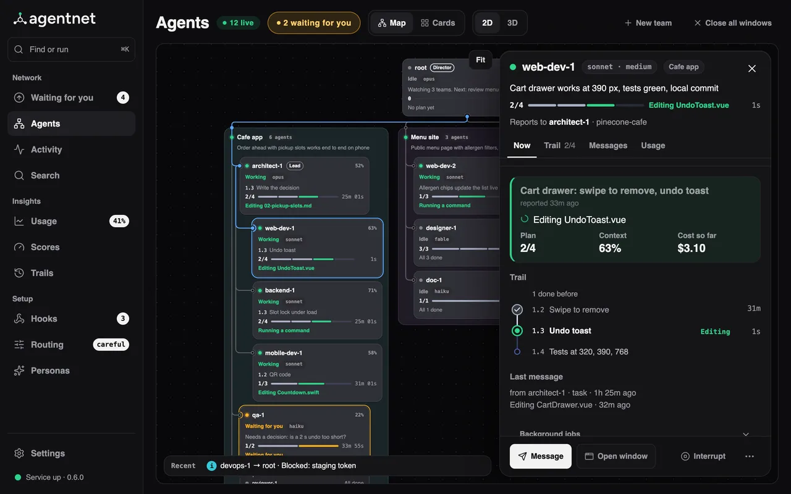
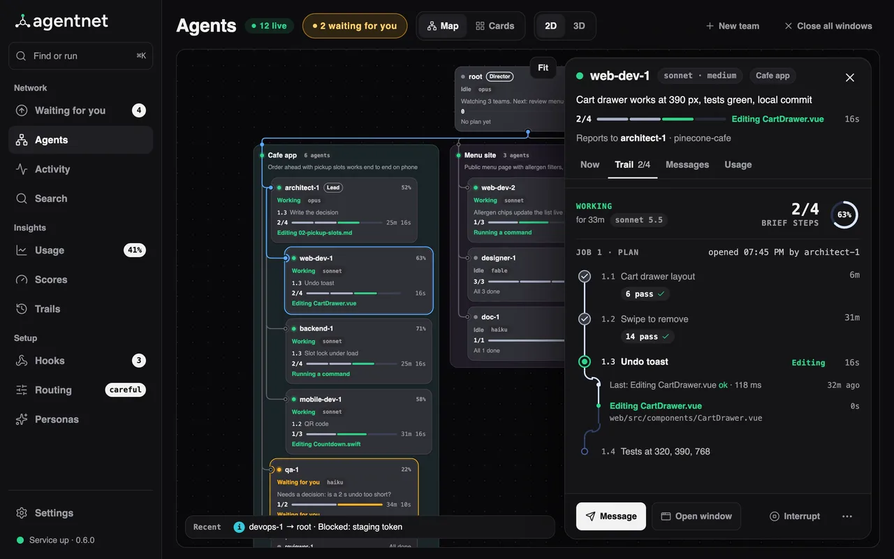
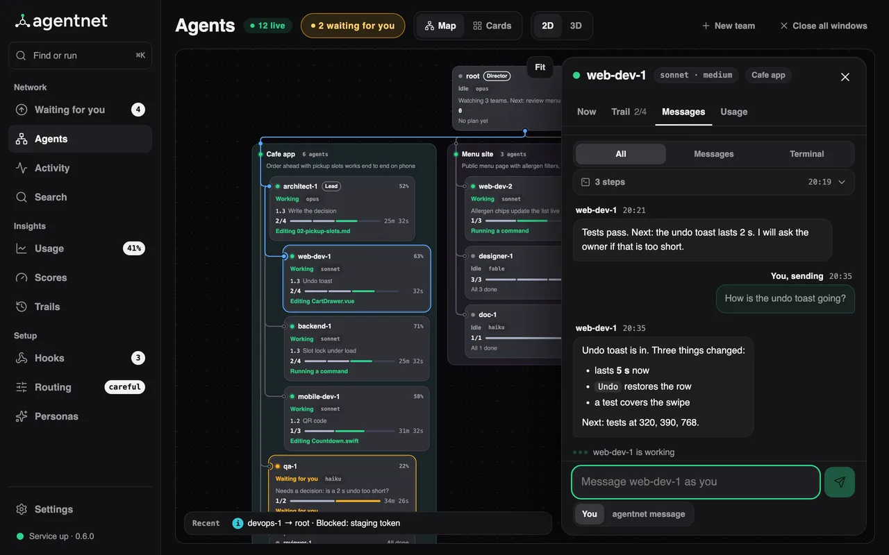
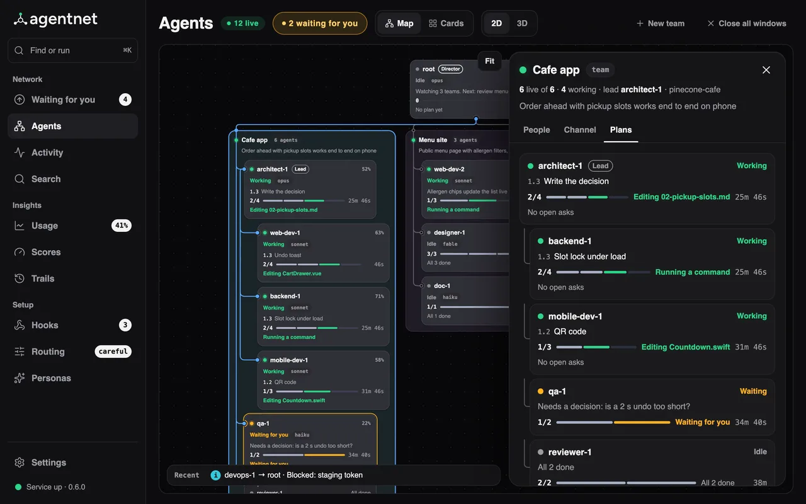
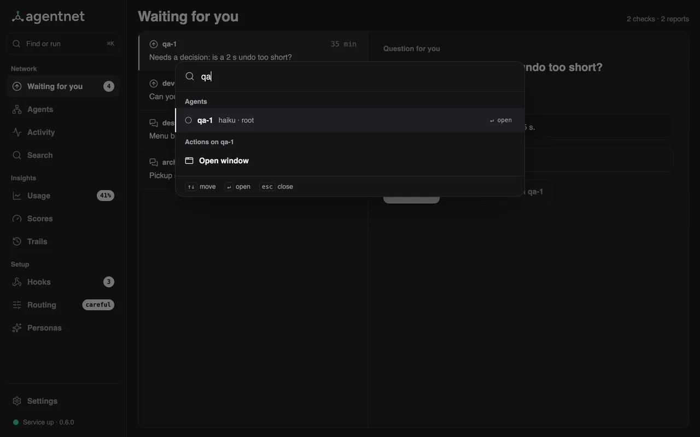
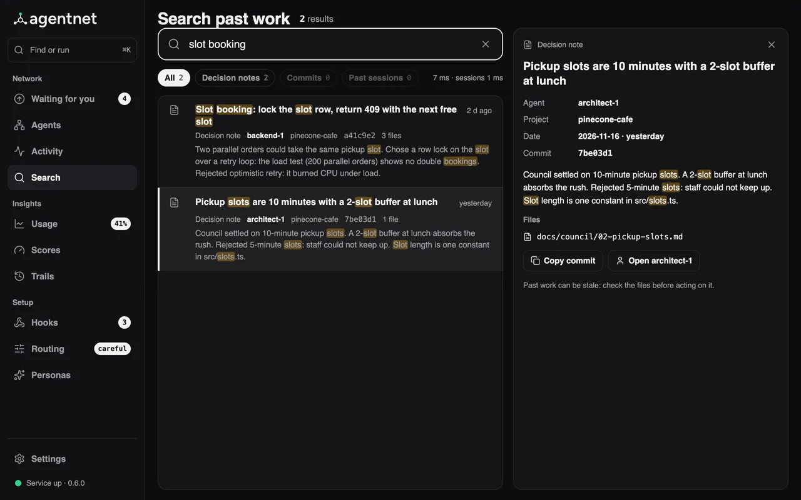
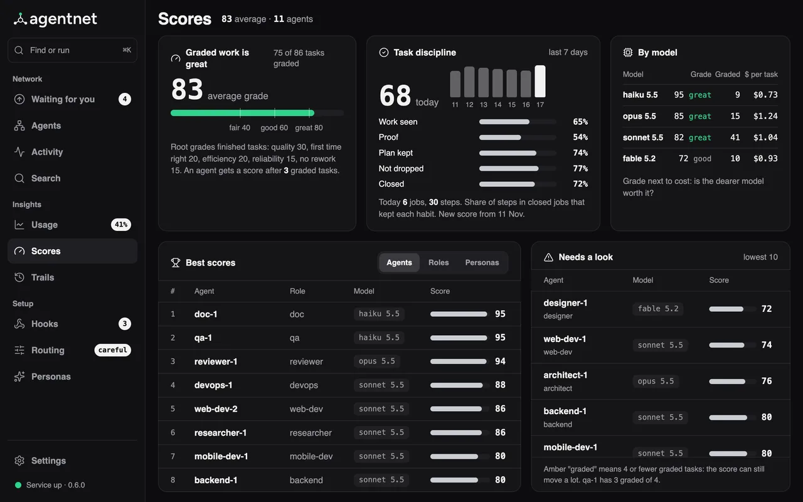

An org chart for your Claude Code agents
Name them. Give them a boss. Watch them work.
agentnet gives every Claude Code session a name, a boss, a task list and an inbox, and shows the whole team live on your own machine.
Every recording on this page shows demo data.

- You tab through ten terminals to find the one that is stuck.
- You copy what one session said into the next by hand.
- A fresh session repeats a choice the last one already made.
See the whole org on one screen.
The director sits on top, each team has its own region, and reports hang under their lead. You read who works, who waits and who is stuck.
- A message travels along its line as light, so you see who talks to whom.
- Each card shows the state, the progress and the step in hand.
- Pan, zoom and rotate. It fits a phone.
Agents

Or watch them at their desks.
One switch turns the same map into a small 3D office. Every team has a room, and every agent is a person at a desk.
- Agents type while they work and turn to each other when they talk.
- The director has an office of its own, easy to find.
- Drawn in code. There are no assets to fetch.
Agents, then 2D | 3D

Every job has a plan you can read.
Before it starts, an agent writes a short plan: seven steps at most. You see the plan on its card, in its panel and on the team board.
- A step closes only with proof: a commit, a file, a test run.
- agentnet checks the proof it can and marks the rest as not verified.
- New scope is a new job, so plans stay short.
Agents, pick an agent, Now

Follow one agent, step by step.
The Trail tab draws an agent’s work as one line: each step with its time, the branches it took, and the point where it waits for you.
- The header shows the state, the time in that state, the model and how full its context is.
- Hover a step to peek at what happened there.
- The same line runs on the agent’s card on the map.
Agents, pick an agent, Trail

Talk to any agent from the browser.
Open an agent and write to it. Replies render as clean text with lists and code, and read like a chat, not like a terminal.
- Write as yourself, straight into its session, or as the director.
- Long reports fold, so the thread stays readable.
- No tmux attach and no hunting for the right pane.
Agents, pick an agent, Messages

Teams with a goal, a channel and a board.
Put the agents that share a job in a team. The team pane shows its people as a tree, their channel and their shared plans.
- Every team has one written goal that says what done looks like.
- The channel shows who has read each message.
- A team closes by itself when its last agent is closed.
Agents, pick a team

Look only when someone needs you.
Waiting for you lists the reports and questions nobody has answered yet. The count sits in the side rail, so one glance tells you if you can stay away.
- A report with no reply for 10 minutes shows up here.
- Cmd+K opens a command palette: jump to any agent, team or page.
- On a phone the same search sits behind one button.
Waiting for you

Keep what the last agent decided.
When an agent finishes real work it leaves a decision note: what it chose, what it rejected and why. The next agent searches those notes before it starts.
- Search past work with a few words, as an agent or as you.
- Each hit shows the date, the agent and the files that still exist.
- The Trails page shows how often the notes get used.
Search

See what each agent cost, and how it worked.
Usage shows what runs now and which models take the most. Scores puts a grade next to the cost, so cheap and good are easy to tell apart.
- A ranked list of agents by usage, with the model mix.
- A discipline score for how well the plan was kept.
- Best and needs-a-look lists on one screen.
Usage, then Scores

Also new
- Model routingEach pick shows its score and the reason for the model.
- PersonasA catalog you can filter, with a default per role.
- HooksOne row per hook. Switch one off, and undo it.
- ActivityEvery message and event, filtered by agent.
- Director setupA full page with steps. No terminal needed.
- Offline barSays when the connection was lost, on every page.
Local only. No login. Refuses to listen on a public address.
How it works
You need Claude Code, tmux and Bun, on macOS or Linux. Start from source:
git clone https://github.com/umuryavuz96/agentnet && cd agentnet
bun install
bun run web:buildThen start the server, spawn your first agent and open the web app. All steps
agentnet starts real Claude Code sessions, so every agent uses your Claude Code usage. The web app shows what each one used.
Security
- Listens on
127.0.0.1, so only your machine can reach it. - One LAN or tailnet address is opt-in. Public addresses are refused.
- There is no login, so never expose it to the internet.
- Only the machine itself or the root agent can start and stop agents.
- Agent tokens are identity, not a login, kept in a file only you can read.
Questions
Why not Claude Code subagents or agent teams?
Subagents and agent teams live inside one Claude Code session. agentnet is the layer outside it: names, inboxes, tasks and decision notes across sessions, so it complements them.
Is it safe?
It listens on 127.0.0.1 and refuses public addresses. There is no login, so never put it on the internet.
Does it cost extra?
agentnet starts real Claude Code sessions, so every agent uses your Claude Code usage. The web app shows what each one used.
Does it run on Windows?
No. agentnet runs on macOS and Linux.
Do I need Server OS?
No. agentnet works on its own. Support for showing it inside Server OS is coming in a later release.
Start your first agent
There is no agent loop to write; the agents are real Claude Code sessions.
Homebrew and a signed installer are coming. The recordings above use demo data on a scratch install.